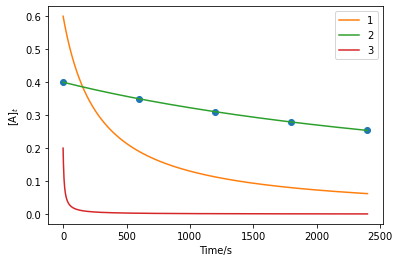

Exercises¶
The first exercise is to write a function to calculate the distance between two atoms and use it in the nested loop featured previously.
import numpy as np
def distance(atom1, atom2):
"""
Find the distance between two atoms.
Args:
atom1 (array_like): x, y, z coordinates of atom 1.
atom2 (array_like): x, y, z coordinates of atom 2.
Returns:
(float): distance between atoms 1 and 2.
"""
return np.sqrt(np.sum((atom1 - atom2) ** 2))
atom_1 = [0.1, 0.5, 3.2]
atom_2 = [0.4, 0.5, 2.3]
atom_3 = [-0.3, 0.3, 1.7]
distances = []
atoms = np.array([atom_1, atom_2, atom_3])
for i, a_i in enumerate(atoms):
for j, a_j in enumerate(atoms[i+1:]):
distances.append(distance(a_i, a_j))
print(distances)
[0.9486832980505141, 1.5652475842498532, 0.9433981132056602]
The second exercise is to write a function that implements the second-order rate equation.
def second_order(t, A0, k):
"""
The second order rate law.
Args:
t (float): Time (s).
A0 (float): Initial concentration (M).
k (float): Rate constant (M-1s-1).
Returns:
(float): Concentration at time t (M).
"""
return A0 / (A0 * k * t + 1)
We are to then plot the data given in the table as a scatter plot and overlay the model second order rate equation over this using the different parameter sets.
import matplotlib.pyplot as plt
t = np.array([0, 600, 1200, 1800, 2400])
At = np.array([0.400, 0.350, 0.311, 0.279, 0.254])
x = np.linspace(0, 2400, 1000)
plt.plot(t, At, 'o')
plt.plot(x, second_order(x, 0.6, 0.006), label='1')
plt.plot(x, second_order(x, 0.4, 0.0006), label='2')
plt.plot(x, second_order(x, 0.2, 0.6), label='3')
plt.xlabel('Time/s')
plt.ylabel('$[$A$]_t$')
plt.legend()
plt.show()

We can see that the model labeled as 2 offers the best agreement to the data.